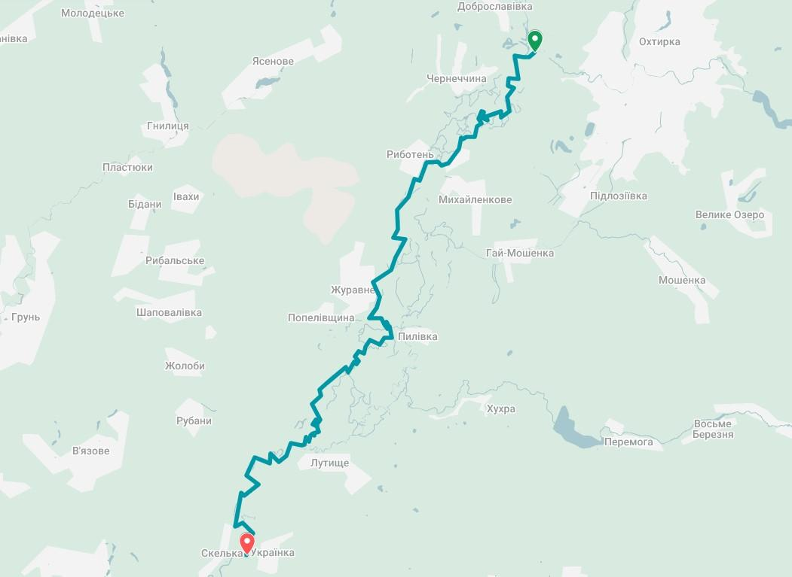

Ворскла — тихий сплав для всієї родини
Ворскла — неквапна річка з прозорою водою і пісчаними берегами, що м'яко вигинаються в оточенні заплавних лісів. Від Мохнача і до Змієва Сіверський Донець знову тече в низьких берегах, а нижче Змієва правий берег стає крутим і порізаним балками.
Маршрут г.Охтирка — с.Українка охоплює найтихіший відрізок Ворскли: невелика кількість берегів, обрамлених невеликими лісами, вода в річці дуже чиста і проглядається на всю глибину до дна. На піщаних пляжах часто зустрічаються дикі качки. Порогів та водоворотів немає.
Маршрут ідеально підходить для сімей з дітьми від 5 років, для новачків без досвіду сплаву, а також для тих, хто хоче провести вихідні в спокійній атмосфері природи без стресу.
Схема маршруту

Карта має ознайомчий характер і не відображає повний маршрут сплаву.
Все необхідне вже є
- Байдарка + весло та рятувальний жилет
- Намет двомісний або тримісний За вибором при бронюванні
- Спальник та килимок Індивідуальні для кожного
- Гермомішок 70 л Для захисту речей від вологи
- Гаряче харчування 3-разове Сніданок, обід, вечеря
- Вода питна 1.5 л/день Бутильована вода
- Лагерне спорядження Стіл, стілець, кострове обладнання
- Інструктор-супровід Аптечка та ремонтний набір
Не включено в ціну:
- Трансфер на річку (400 ₴)
- Особисті витрати
Розклад по днях
- 07:15 Збір туристів біля ст.м. Гагаріна
- 07:30 Виїзд з Харкова на річку
- 09:00 Прибуття на річку
- 09:30 Збір особистих речей, інструктаж
- 10:00 Початок сплаву
- 13:00 Зупинка на обід, купаємося, загоряємо
- 15:00 Продовження сплаву
- 18:00 Зупинка на ночівлю, установка табору
- 19:30 Вечеря
- 20:30 Вільний час, посиденьки біля багаття
- 23:00 Відбій
- 08:00 Підйом, збір табору, сніданок
- 10:30 Вихід на маршрут
- 13:00 Зупинка на обід, купаємося, загоряємо
- 15:00 Продовження сплаву
- 16:00 Завершення сплаву
- 16:30 Виїзд до Харкова
- 18:30 Прибуття до Харкова на ст.м. Гагаріна


Пам’ятка для учасників сплаву
Кожен збірний сплав супроводжується інструктором, який відповідає за безпечне проходження маршруту. Тому всі вимоги інструктора, спрямовані на дотримання правил безпеки, графіка сплаву та підтримання порядку, є обов’язковими для виконання всіма учасниками водного походу.
Перед початком сплаву рекомендуємо уважно ознайомитися з правилами поведінки на маршруті, правилами перебування на природі та технікою безпеки на воді. Дотримання цих правил є обов'язковою умовою участі у сплаві.
Інші маршрути
с.Мохнач - с.Задонецьке
Численні протоки, стариці та річкові острови. Відчуття справжньої дикої природи поруч із містом.
с.Климентово — с.Пилівка
Лісова Ворскла — чиста вода, помірне русло, мальовничі береги порослі ільмом і вербою. Відмінний варіант для тих, хто цінує тишу і природу.
с.Каменка — с.Дворічна
Заливні луги і крейдяні схили — найгарніший маршрут Слобожанщини. Вода чиста, дно піщане.